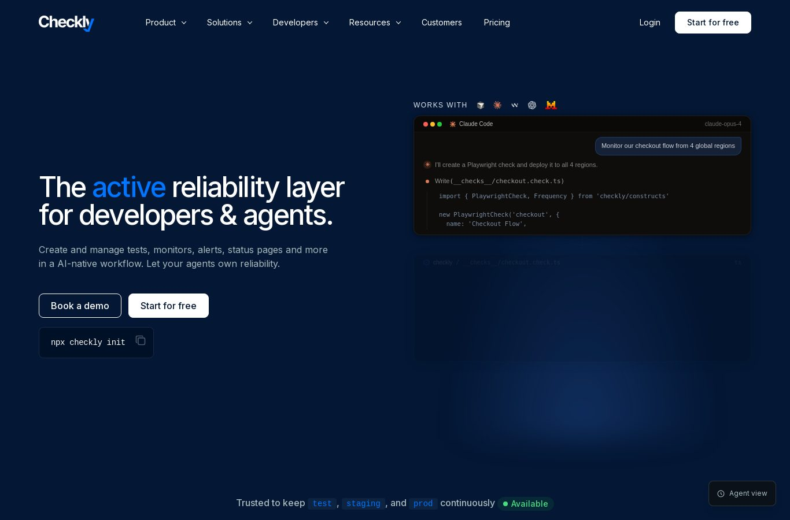
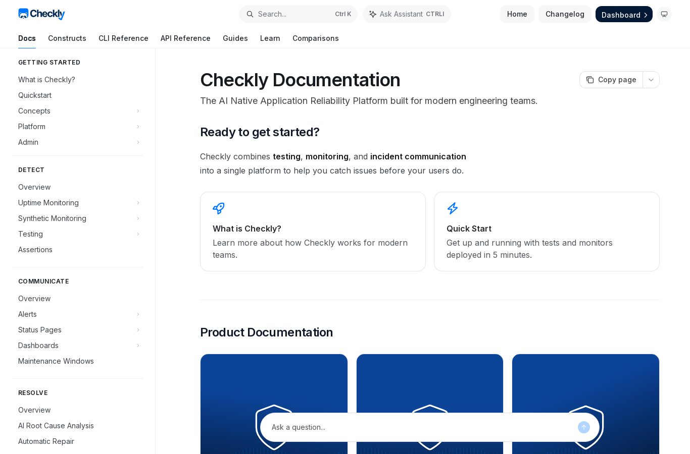
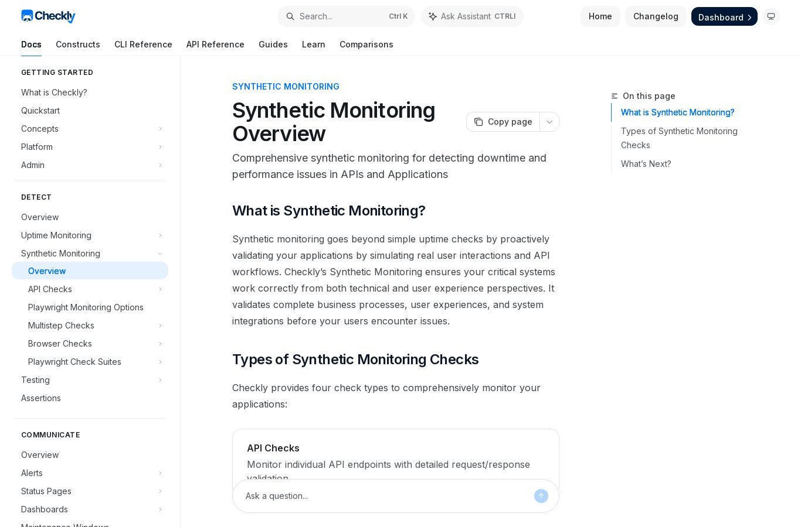

Observed on Checkly's public site and docs, checked 2026-10-07. The written rules are in DESIGN.md.
Official logo (unaltered public assets)
Colour
navy-950 #061220
navy-900 #0A1A33
navy-700 #002652
blue-500 #0075FF
blue-300 #80BBFF
blue-50 #EEF5FF
ink-600 #4B5B73
line #E3E8EF
pass #0E9F6E
fail #E0364F
warn / review #B76E00
Type
Inter 28 / 700: Transport passed. Task failed.
Inter 16 / 400: body copy for run detail and memos.
ui-monospace 12: assert output.recipient == policy.allowed_recipient
Controls and status
✓ PASS✕ FAIL◐ REVIEW
Reference captures
Marketing (dark) and docs (light). The product uses the dense docs treatment with a navy top bar.


